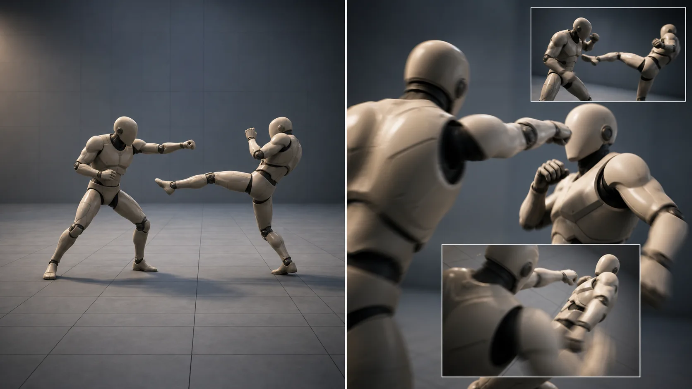
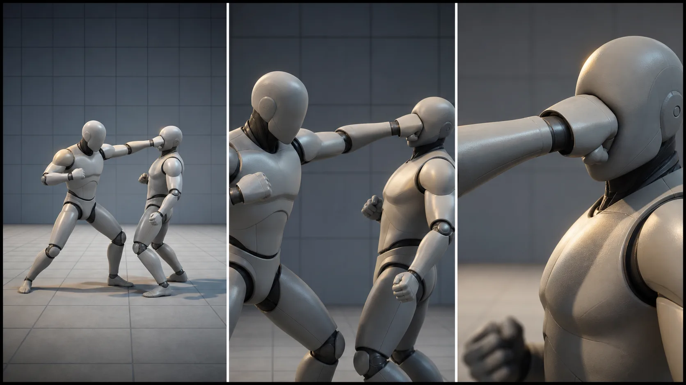
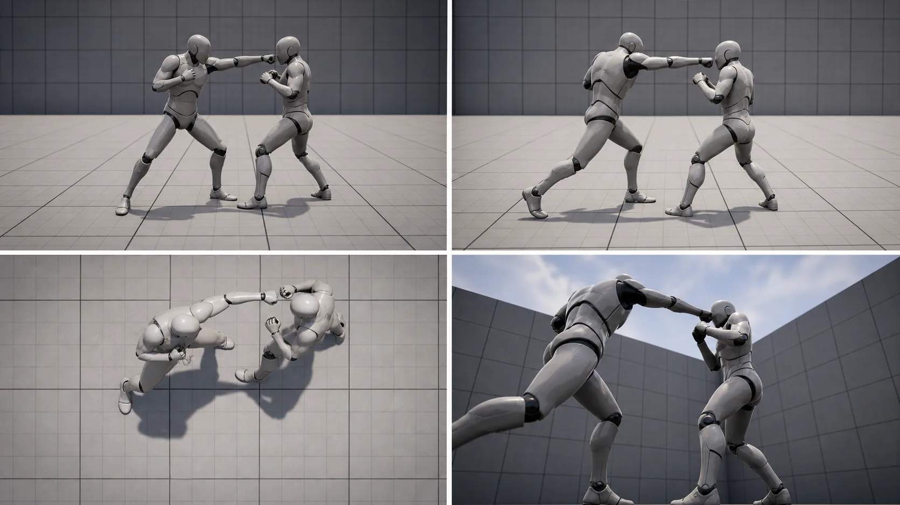
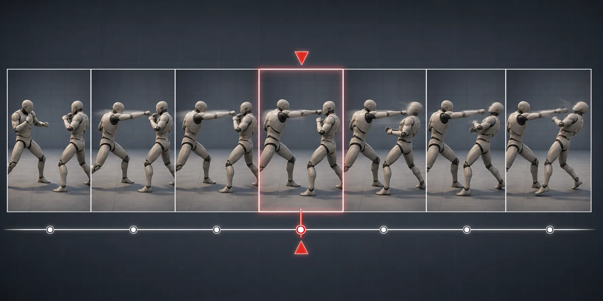
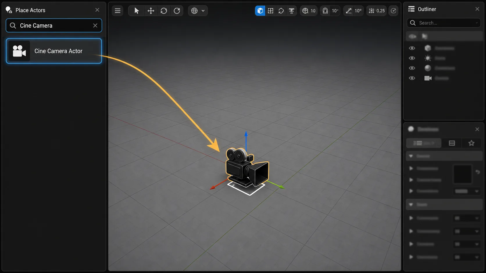
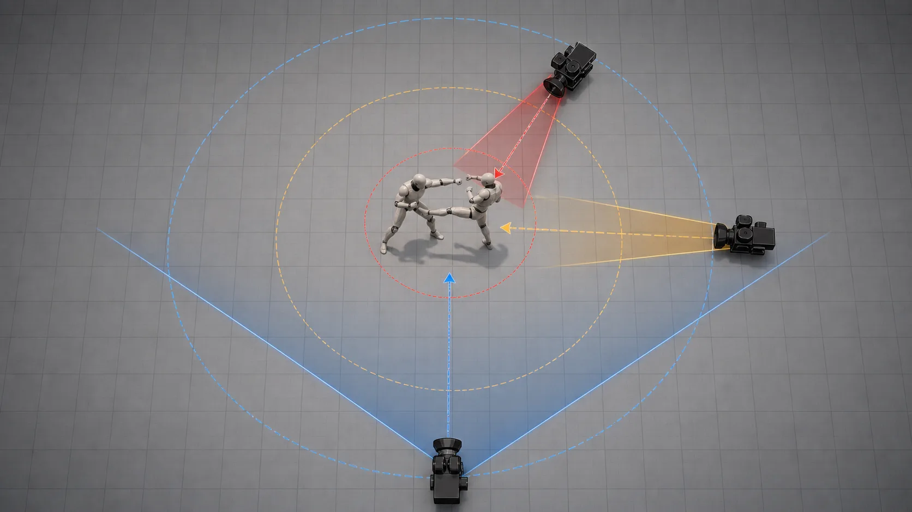
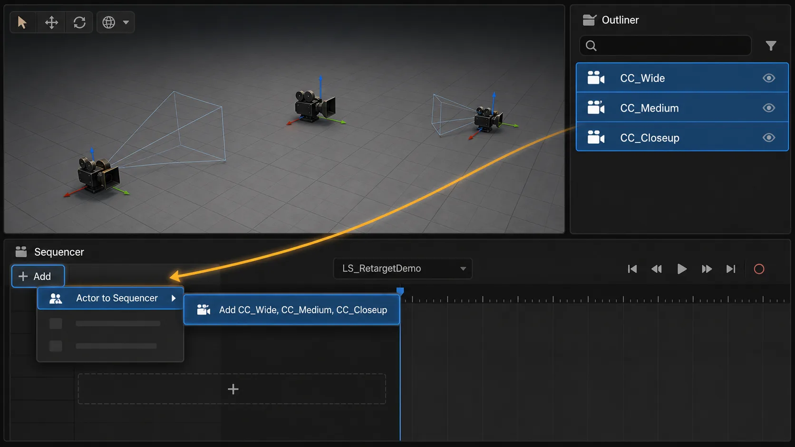
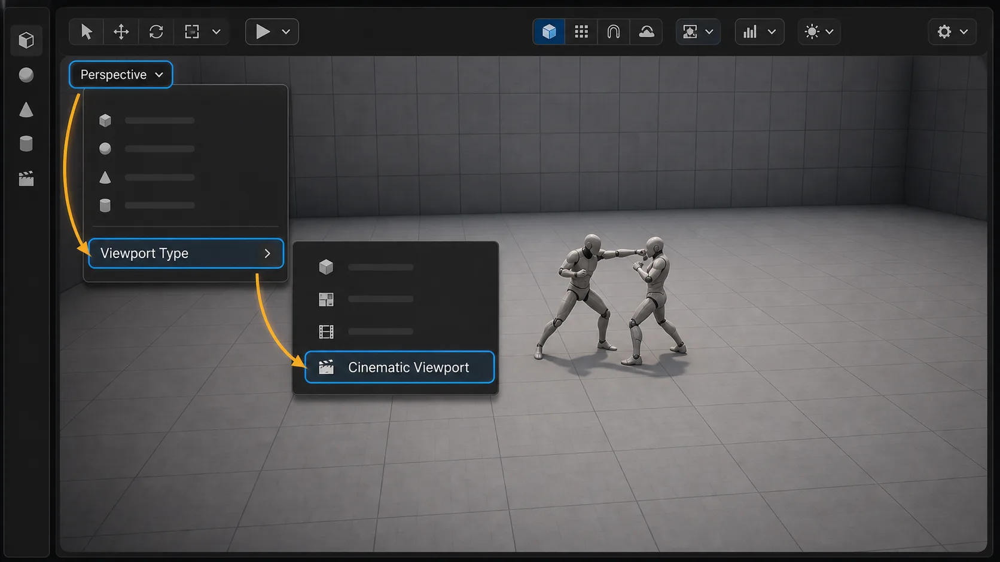
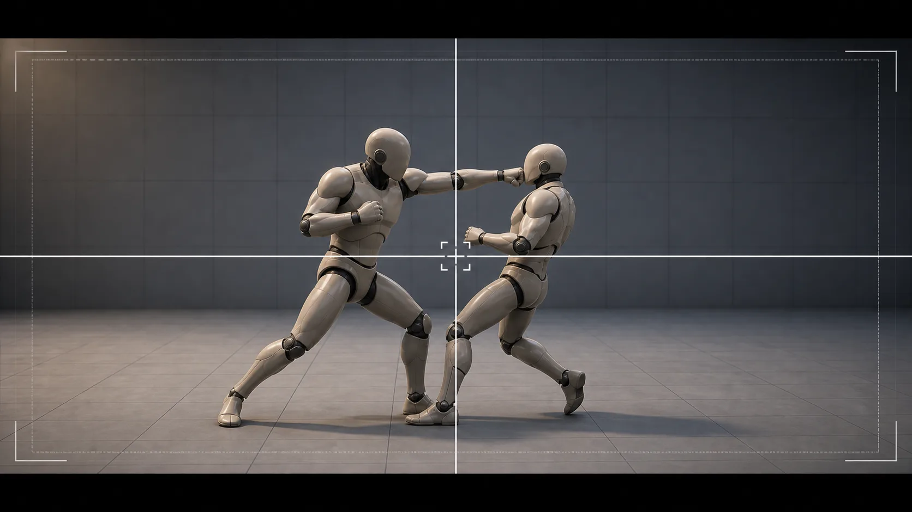
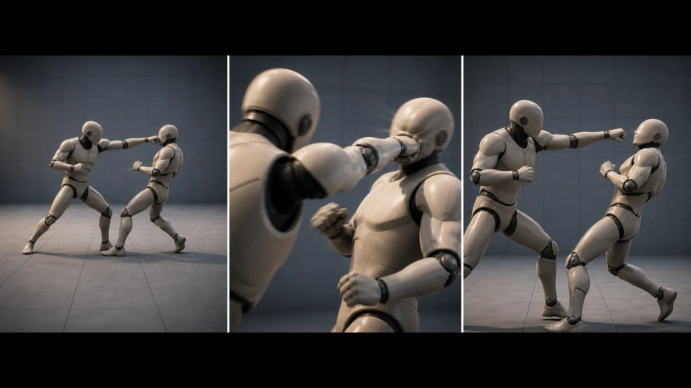

11주차 1교시 — 격투씬의 영상 문법과 다중 카메라 셋업 (학생용)
관련 문서
| 관계 | 문서 |
|---|---|
| 강의 계획서 | 강의계획서: Game Engine II |
| 강의 아웃라인 | 11주차 아웃라인: 시퀀서 카메라 워크 |
| 선행 10주차 3교시 | 10주차 3교시: Mixamo 격투 시퀀스 |
- 격투씬 컷 편집의 세 가지 기준(Shot Size / Angle / Cut Timing)을 이해하고 본인 격투 시퀀스에 적용할 수 있다
- Cine Camera Actor 여러 대를 배치·명명하고 시퀀서에 한 번에 바인딩한 뒤 Spawnable Actor로 변환할 수 있다
- Camera Cut 트랙으로 카메라를 시간 구간별로 전환하고 Cinematic Viewport와 CrossHair로 프레이밍을 점검할 수 있다
지난주(10주차)에 Mixamo 격투 모션 3종을 본인 캐릭터에 입혀 10–15초짜리 격투 시퀀스(LS_RetargetDemo)를 만들었습니다. 11주차는 그 격투 시퀀스 위에 카메라를 얹는 시간입니다. 새 캐릭터나 새 동작을 만드는 시간이 아니라, 같은 안무를 어떻게 비출지 결정하는 시간입니다.
1교시는 왜 컷을 나누는지, 카메라 여러 대를 시퀀서에 어떻게 등록하는지, Camera Cut 트랙과 Cinematic Viewport 를 어떻게 쓰는지 다룹니다.
도입 — 같은 안무, 다른 영화
격투 영화 두 클립을 비교합니다. 한 클립은 카메라가 거의 안 움직이는 와이드 1샷, 다른 클립은 컷이 자주 바뀝니다. 두 가지에 집중하세요. (1) 펀치가 더 강하게 느껴지는 쪽은 어디인가, (2) 왜 그렇게 느껴지는가.
- 클립 A (와이드 롱테이크) — 예: 〈올드보이〉 복도 격투, 〈존 윅 1〉 클럽 격투
- 클립 B (멀티컷 격투) — 예: 〈매트릭스〉 도장 격투, 마블 액션의 짧은 컷 시퀀스

정답은 없습니다. 와이드가 더 박력 있게 느껴질 수도 있고, 멀티컷이 더 격렬하게 느껴질 수도 있습니다. 중요한 것은 카메라 선택이 격투의 인상을 바꾼다는 점입니다. 같은 안무라도 카메라가 달라지면 다른 영화가 됩니다.
오늘의 목표: 본인 격투 시퀀스를 와이드 한 샷으로만 두지 않고, 카메라 여러 대를 의도적으로 배치해 다른 영화처럼 보이게 만듭니다.
핵심 개념 1 — 컷 편집의 세 가지 기준
카메라를 정할 때 고려할 변수는 많습니다. 화각, 조리개, 초점 거리, 카메라 위치와 움직임, 컷 길이, 트랜지션, 라이팅, 컬러 등입니다. 오늘은 격투씬에 필요한 요소를 세 가지 기준으로 단순화합니다.
Shot Size · Angle · Cut Timing.
기준 1: Shot Size — 화면에 얼마나 담는가
| Shot Size | 설명 | 격투에서 쓰는 자리 |
|---|---|---|
| Wide (와이드) | 인물 전신 + 주변 공간 보임 | 격투의 시작·끝, 두 인물 거리감, 안무 전체 흐름 |
| Medium (미디엄) | 인물 허리·가슴부터 위 | 자세 잡는 순간, 노려보는 컷, 공격 직전 |
| Close-up (클로즈업) | 얼굴·주먹·발만 화면 가득 | 임팩트 직전·직후, 표정 반응, 디테일 강조 |

클로즈업은 임팩트 순간에 효과적입니다. 펀치가 닿는 1–2 프레임에 얼굴이나 주먹을 화면 가득 채우면 충격이 더 크게 느껴집니다. 와이드는 "어디서 누가 누구를 친다"의 정보 컷, 클로즈업은 "쾅"의 충격 컷, 미디엄은 그 사이를 잇는 호흡 컷입니다.
9주차에서 배운 Focal Length 와 짝꿍입니다. 24mm 광각은 와이드에, 85mm 망원은 클로즈업에 어울립니다.
기준 2: Angle — 어디서 바라보는가
| Angle | 설명 | 격투에서 쓰는 자리 |
|---|---|---|
| 정면 (Front) | 인물 얼굴이 카메라 정면 | 위협·도전 컷, 노려보기 |
| 측면 (Side) | 인물을 옆에서 | 두 인물 거리·동작 궤적이 잘 보임. 펀치·킥 궤적 전달에 강함 |
| 부감 (High / Bird's Eye) | 위에서 내려다봄 | 공간 전체 파악, 캐릭터를 작게 보이게 → 압박감 |
| 앙각 (Low / Worm's Eye) | 아래에서 올려다봄 | 캐릭터가 거대해 보임 → 영웅 컷, 위협적 컷 |

정면에서 펀치를 받으면 주먹이 화면 안쪽으로 다가오기 때문에 거리 가늠이 어렵습니다. 측면에서 보면 주먹이 A 지점에서 B 지점까지 그리는 궤적이 한눈에 보이며, 발차기도 마찬가지입니다. 격투 영화에서 측면 와이드가 자주 등장하는 이유입니다.
부감과 앙각은 캐릭터 크기 인상을 결정합니다. 부감으로 잡으면 캐릭터가 위에서 내려다보여서 작아 보이고, 앙각이면 우러러보여서 커 보입니다. 강한 적은 앙각으로, 쓰러지기 직전 캐릭터는 부감으로 — 영화 문법입니다.
기준 3: Cut Timing — 언제 컷을 바꾸는가
컷을 동작 중간에 자르면 펀치가 휘둘러지는 도중에 화면이 바뀌어 어색합니다. 격투 영상에서는 동작의 정점에 닿기 직전 1–2 프레임에 컷을 바꾸면 충격이 가장 잘 살아납니다.

| 컷 타이밍 | 효과 |
|---|---|
| 임팩트 직전 1–2 프레임 | 다음 컷이 임팩트를 받음 → 충격 강조 (중요 격투의 핵심) |
| 동작 중간 | 끊겨 보임 (피해야 함) |
| 동작 끝난 후 | 호흡 컷. 임팩트 잔향, 표정 반응 |
| 정지 자세 사이 | 호흡 조절. 시퀀스 흐름 환기 |
격투씬에서 자주 보이는 패턴: 와이드(전체) → 미디엄(공격 자세) → 클로즈업(임팩트 직전 컷 → 다음 컷에서 충격 받기) → 와이드(다시 거리). 이 흐름이 가장 무난하고 안정적인 격투 시퀀스 문법입니다. 3교시 실습 4에서는 이 패턴을 본인 격투 시퀀스에 맞게 4–5컷으로 구성합니다.
세 가지 기준 요약 + 점검 질문
1번 기준 = '얼마나 크게' (Shot Size), 2번 기준 = '어디서' (Angle), 3번 기준 = '언제 자를지' (Cut Timing). 종이에 적어두면 카메라를 정할 때 체크리스트가 됩니다.
본인 격투 시퀀스에 펀치 동작이 들어있다면, 임팩트 순간을 클로즈업으로 잡으려면 카메라를 어디 두고 어느 화각으로 설정해야 할까요?
(예상 답: 캐릭터 가까이 + Focal Length 85mm 정도 망원 + 정면 또는 측면. 9주차 4대 파라미터 활용)
핵심 개념 2 — 다중 카메라 셋업 + Spawnable Actor 변환
9주차에서는 카메라 1대만 사용했습니다. 11주차는 그 카메라를 여러 대로 확장합니다. 격투씬은 와이드 1대, 미디엄 1대, 클로즈업 1대를 기본으로 잡으면 구성하기 쉽습니다.
자주 막히는 단계가 다섯 가지 있습니다. 카메라를 미리 어디에 둘 것인가, 이름을 어떻게 정리할 것인가, 시퀀서에 어떻게 한 번에 등록할 것인가, 시퀀서 카메라가 레벨에 영구 존재하지 않게 어떻게 분리할 것인가, viewport 미리보기를 영화 모드로 어떻게 바꿀 것인가. 이 5단계를 순서대로 봅니다.
Step 1 — Cine Camera Actor 여러 대 생성
카메라 생성 자체는 9주차와 동일합니다. Place Actors 패널에서 Cine Camera 검색해서 viewport 로 드래그합니다. 한 번 생성하면 두 번째·세 번째는 더 빠른 방법이 있습니다.
작업 1 — 첫 번째 Cine Camera Actor 생성
- 좌상단 Place Actors 패널 (없으면 Window > Place Actors)
- 검색창에
Cine Camera입력 - Cine Camera Actor 를 viewport 로 드래그앤드롭

작업 2 — 카메라 복제로 여러 대 만들기 (빠른 방법)
- Outliner 에서 방금 생성한 CineCameraActor 선택
- Ctrl+W (Duplicate) 누르면 같은 위치에 복제본 생성
- 한 번 더 Ctrl+W → 총 3대
Filmback 같은 공통 설정이 자동 따라오므로, 카메라마다 처음부터 설정 다시 할 필요가 없습니다. Filmback 35mm Academy 같은 본인 기본값을 한 번만 잡고 복제하는 것이 효율적입니다.
Step 2 — 사전 위치 / 각도 배치
카메라를 viewport 어디에 둘지 미리 정하지 않으면, 시퀀서 컷을 구성하는 단계에서 카메라 위치 조정에 시간을 많이 쓰게 됩니다. 기준점은 본인 격투 캐릭터 입니다. 아래 표는 캐릭터가 0,0,0 근처에 있을 때의 예시이며, 본인 프로젝트에서는 현재 캐릭터 위치를 중심으로 같은 거리감이 나오게 배치합니다.
| 카메라 | 위치 | 높이 | 화각 (Focal Length) | 의도 |
|---|---|---|---|---|
| CC_Wide | 캐릭터 뒤 또는 정면, 500–800cm (5–8m) | 캐릭터 가슴 ~ 머리 높이 | 24–35mm (광각) | 전체 격투 영역 + 공간 정보 |
| CC_Medium | 캐릭터 측면, 200–300cm (2–3m) | 캐릭터 가슴 ~ 어깨 높이 | 50mm (표준) | 상반신·자세·노려보기 |
| CC_Closeup | 캐릭터 정면 또는 측면, 80–150cm (1–1.5m) | 캐릭터 머리 또는 주먹 높이 | 85mm (망원) | 얼굴 표정 / 임팩트 디테일 |

Unreal 의 거리 단위는 cm 입니다. 100uu = 100cm = 1m. 와이드를 5m 뒤로 두려면 X 또는 Y 축으로 500uu 떨어뜨리면 됩니다.
작업 3 — 각 카메라 Details 패널에서 위치·파라미터 설정
각 카메라 선택 후 우측 Details 패널:
- Transform > Location — 위 표 기준으로 캐릭터 상대 위치 입력
- Transform > Rotation — 캐릭터를 향하도록. Pitch(상하)·Yaw(좌우) 조정. 단축키 F 로 선택한 카메라를 viewport 중앙에 두고 회전 조작
- Current Camera Settings > Filmback — 35mm Academy (또는 본인 9주차 기본값)
- Current Camera Settings > Lens > Focal Length — 위 표 기준 (24 / 50 / 85)
- Current Camera Settings > Lens > Aperture — 클로즈업만 f/1.4–2.8 (얕은 심도), 나머지는 f/5.6–8 (일반)
Details 패널 위쪽의 Pilot 버튼을 누르면 viewport 가 그 카메라의 시점이 되어서 viewport 조작으로 카메라 위치를 직접 잡을 수 있습니다. 직관적입니다. 단, Pilot 끄는 것을 잊지 마세요. 안 끄면 카메라가 계속 viewport 카메라와 동기화되어 의도치 않게 움직입니다.
Step 3 — 명명 규칙
카메라 3대를 만들고 나면 Outliner 에 CineCameraActor / CineCameraActor2 / CineCameraActor3 처럼 표시됩니다. 그대로 두면 시퀀서 컷 트랙에서 어느 것이 와이드인지 클로즈업인지 헷갈립니다. 먼저 이름부터 정리합니다.
작업 4 — 명명 규칙 적용
Outliner 에서 각 카메라 선택 → F2 → 이름 변경:
| 기존 이름 | 권장 이름 | prefix 의미 |
|---|---|---|
| CineCameraActor | CC_Wide | CC = Cine Camera |
| CineCameraActor2 | CC_Medium | |
| CineCameraActor3 | CC_Closeup |
prefix 를 CC_ 로 통일하면 시퀀서나 Outliner 에서 'CC' 만 쳐도 카메라 3대가 한꺼번에 필터링됩니다. 본인 격투 시퀀스에 카메라 외 액터가 많아질수록 이런 정리가 작업 시간을 줄여줍니다.
Outliner 우상단 검색창에 'CC' 입력해보세요. 카메라 3대만 남고 나머지는 숨겨집니다. 다음 단계 '다중 선택'에서 바로 활용합니다.
Step 4 — 시퀀서에 다중 바인딩
카메라 3대를 한 번에 시퀀서에 등록합니다.
작업 5 — Outliner 에서 3대 동시 선택
- Outliner 에서 CC_Wide 클릭
- Ctrl+클릭 으로 CC_Medium 추가 선택
- Ctrl+클릭 으로 CC_Closeup 추가 선택
- 또는 첫 번째 클릭 후 마지막 카메라 Shift+클릭 으로 범위 선택
작업 6 — 10주차에서 만든 Level Sequence 열기
- Content Browser > Cinematics 폴더의 LS_RetargetDemo 더블클릭
- 시퀀서 에디터가 뜨며 (이미 SKM_Manny 바인딩 + Animation 트랙이 있는 상태)
작업 7 — 시퀀서에 카메라 3대 동시 추가
- Outliner 에서 3대 카메라 다중 선택 유지 (위 작업 5)
- 시퀀서 상단의
+ Add(Add Track) 버튼 클릭 - 메뉴:
Actor to Sequencer>Add 'CC_Wide, CC_Medium, CC_Closeup' - 다중 선택 상태면 한 메뉴 항목에 3대 이름이 함께 표시됨
- 시퀀서에 카메라 바인딩 트랙 3개 가 한 번에 생성됨

10주차 SKM_Manny 바인딩 절차와 같은 패턴입니다. 액터를 Outliner 에서 먼저 선택, 시퀀서 + Add 버튼, Actor to Sequencer 메뉴. 시퀀서 빈 공간 우클릭으로 들어가면 다른 트랙들이 떠서 혼동하므로 위 순서로 진행합니다.
Step 5 — Spawnable Actor 변환 중요
카메라 3대를 시퀀서에 바인딩한 상태로 두면 카메라가 레벨에 영구적으로 존재합니다. 시네마틱 작업하다가 카메라를 옮기거나 지우면 레벨 자체가 바뀝니다. 게임 플레이 로직이 같은 레벨을 쓰고 있다면, 시네마틱 작업이 의도치 않게 게임에 영향을 줍니다.
시퀀서에는 Spawnable Actor 라는 개념이 있습니다. 시퀀서를 실행할 때만 잠깐 생성되었다가 끝나면 사라지는 오브젝트입니다. 카메라를 Spawnable 로 바꾸면 레벨에서는 카메라가 사라지고, 시퀀서 안에서만 살아있는 형태가 됩니다.
시네마틱 작업이 게임 플레이 로직에 영향 주지 않도록 분리하는 표준 패턴입니다. 실무에서도 시네마틱 카메라·라이트·임시 액터는 거의 다 Spawnable 로 변환합니다.
작업 8 — 시퀀서 카메라 바인딩 3개를 Spawnable 로 변환
- 시퀀서 좌측 트랙 목록에서 CC_Wide 카메라 바인딩 트랙 우클릭
- 메뉴:
Convert Selected Binding(s) To>Spawnable Actor선택 - 카메라 바인딩 트랙 아이콘이 일반 카메라 (카메라) → 번개 모양 (Spawnable) 으로 바뀜
- Outliner 에서도 해당 카메라 옆에 Spawnable 번개 아이콘 표시됨
- CC_Medium / CC_Closeup 도 동일 절차 반복 (또는 3개 트랙 다중 선택 후 한 번에 변환)
변환 후 viewport 의 카메라 액터는 시퀀서 timeline 이 활성화된 동안만 보입니다. 시퀀서 닫으면 카메라가 사라진 것처럼 보이는데, 정상입니다. 시퀀서 다시 열면 자동 재생성됩니다.
Spawnable 로 변환하면 카메라 액터가 레벨에 남지 않고 시퀀서 안에서 관리됩니다. 같은 카메라를 다른 시퀀서에서도 쓰고 싶으면 Spawnable 변환 전 복제해두거나, Possessable 로 유지하는 것이 안전합니다. 본 수업은 LS_RetargetDemo 한 시퀀서만 쓰므로 Spawnable 을 기본 흐름으로 둡니다.
흔한 문제 — 다중 카메라 셋업
| 증상 | 원인 | 해결 |
|---|---|---|
| Actor to Sequencer 메뉴에 카메라가 안 보임 | Outliner 에서 액터 선택 안 됨 | Outliner 에서 카메라 다시 클릭 후 시퀀서 + Add |
| 한 대만 추가됨 (다중 선택 안 됨) | Ctrl 또는 Shift 누르지 않음 | Ctrl+클릭으로 2대째부터 누적 선택 |
| 시퀀서 트랙이 너무 좁아 보임 | 트랙 패널 폭 부족 | 시퀀서 좌측 트랙 패널 경계를 우측으로 드래그해 확장 |
| Pilot 모드 켜진 채로 viewport 가 흔들림 | 카메라 Pilot 모드 미해제 | Details 패널 또는 viewport 좌상단 Pilot 아이콘 클릭으로 해제 |
| 카메라 위치가 격투 안무를 못 담음 | 사전 배치 미흡 | 위 표의 거리감을 기준으로 본인 캐릭터 주변에서 다시 배치. 한 번 더 Pilot 으로 시점 점검 |
| Spawnable 변환 메뉴가 안 보임 | 카메라 바인딩이 아닌 일반 트랙 우클릭 | 시퀀서 좌측 카메라 바인딩 트랙 (CC_*) 우클릭. 빈 공간이나 Animation 트랙 우클릭이면 메뉴가 다름 |
| Spawnable 변환 후 viewport 에서 카메라 안 보임 | 시퀀서 닫혀있음 (Spawnable 은 시퀀서 활성 시에만 존재) | 시퀀서 다시 열기. 정상 동작 — Outliner 의 Spawnable 아이콘으로 spawnable 확인 |
| Spawnable 변환 후 카메라가 Camera Cut 트랙에 안 잡힘 | Spawnable 은 시퀀서 안에서만 유효 — 외부 참조 끊김 | Camera Cut 트랙의 + Camera 메뉴에서 spawnable 카메라 다시 선택. 자동 갱신됨 |
핵심 개념 3 — Camera Cut 트랙 + Cinematic Viewport
Camera Cut 트랙이 무엇인가
카메라 3대를 시퀀서에 등록했지만, 한 번에 한 화면에 보일 수 있는 카메라는 1대입니다. 시간 0–3초는 와이드, 3–7초는 클로즈업, 7–12초는 미디엄 — 이렇게 시간 구간별로 어느 카메라가 활성화될지 결정하는 트랙이 Camera Cut 트랙입니다.
Camera Cut 트랙은 시퀀서의 '감독' 트랙입니다. 다른 트랙들이 '캐릭터가 어떻게 움직이는지·카메라 자체가 어떻게 움직이는지'를 다룬다면, Camera Cut 트랙은 '지금 이 시간에는 어느 카메라로 보여줘' 만 다룹니다. 가장 위에 깔리는 메타 트랙입니다.
| 트랙 종류 | 역할 |
|---|---|
| 카메라 바인딩 트랙 (CC_Wide 등) | 그 카메라 1대의 위치·파라미터 키프레임 |
| Camera Cut 트랙 | 여러 카메라 중 어느 것을 시청자에게 보여줄지 시간 구간별 선택 |
| Animation 트랙 | 캐릭터의 격투 모션 클립 (10주차) |
Camera Cut 트랙은 카메라를 만드는 게 아니라 카메라를 고르는 트랙입니다. 카메라 3대는 이미 만들어졌고 (핵심 개념 2), Cut 트랙은 그 중에서 시간대별로 선택만 합니다.
Camera Cut 트랙 생성
작업 9 — Camera Cut 트랙 확인 / 추가
- 시퀀서 트랙 목록 최상단에 Camera Cuts 트랙이 이미 있는지 확인
- 이미 있으면 그대로 사용
- 없으면 시퀀서 상단의
+ Add(Add Track) 버튼 클릭 →Camera Cut Track선택 - 시퀀서 트랙 목록 최상단에 Camera Cuts 트랙 생성됨
Camera Cut 트랙은 시퀀스당 1개만 쓰는 '감독' 트랙입니다. 자동으로 만들어져 있을 수 있으므로 먼저 있는지 확인합니다.
Camera Cut 트랙에 카메라 구간 배치
작업 10 — 첫 컷: Wide (0–3초)
- Camera Cuts 트랙의
+ Camera버튼 (또는 트랙 빈 공간 우클릭 → Add Camera Cut) - 메뉴에서 CC_Wide 선택
- 트랙에 카메라 섹션(Section) 이 시간 0 부터 추가됨 — 기본 길이는 시퀀스 끝까지
작업 11 — 두 번째 컷: Closeup (3–7초)
- Camera Cuts 트랙에서 + Camera 다시 클릭 → CC_Closeup 선택
- 두 번째 섹션이 추가됨
- 섹션의 시작점을 드래그 해 3초 지점으로 이동
- 자동으로 첫 섹션(Wide)이 0–3초로 잘리고, 두 번째 섹션(Closeup)이 3초부터 시작
세 번째 컷: SideWide (7–12초) — CC_Medium 을 측면 와이드로 활용
- + Camera → CC_Medium 선택
- 섹션 시작점을 7초 지점으로 드래그
섹션 하나가 컷 하나입니다. 섹션 길이가 컷 길이이고, 섹션 사이 경계가 컷 전환 시점입니다.
전환은 즉시 전환(Cut)이 기본입니다. 시퀀서 Camera Cut 트랙은 페이드나 디졸브 같은 부드러운 전환을 기본 제공하지 않습니다. 격투씬에서는 즉시 컷이 오히려 맞습니다. 펀치 임팩트에서 페이드 들어가면 충격이 죽습니다.
Cut Timing 의 실제 적용 — 임팩트 프레임에 맞추기
위 3컷 배치는 임시입니다. 실제로는 본인 격투 시퀀스의 펀치 임팩트 프레임에 정확히 컷 경계를 맞춰야 합니다.
Cut Timing 실전 절차:
- 시퀀서 재생 또는 timeline 스크럽으로 본인 격투 시퀀스에서 펀치/킥 임팩트 프레임 위치 확인 (예: 펀치가 닿는 순간이 4초 12프레임 지점)
- 임팩트 직전 1–2 프레임 (= 4초 10프레임 지점)을 컷 경계로 결정
- Camera Cut 트랙의 섹션 경계를 그 프레임으로 드래그
- 임팩트 직전까지는 미디엄으로 동작 흐름 보여주고, 4초 10프레임부터 클로즈업으로 전환 → 다음 1–2 프레임에 클로즈업 화면에서 임팩트가 작렬
핵심 개념 1 의 Cut Timing 이 실제 시퀀서 트랙으로 구현되는 모습입니다. 세 가지 기준이 추상적인 설명에 머물지 않고, 트랙 위 섹션 경계 1프레임 단위 결정으로 이어집니다.
Cinematic Viewport + CrossHair 활성화
Camera Cut 트랙까지 만들면 시퀀스 재생은 되지만, 일반 viewport 는 게임 개발 모드라서 시네마틱 미리보기에 최적화돼 있지 않습니다. viewport 자체를 Cinematic Viewport 라는 영화 미리보기 모드로 바꿉니다.
작업 12 — Cinematic Viewport 로 전환
- viewport 좌상단
Perspective드롭다운 클릭 - 메뉴 하단
Viewport Type섹션 >Cinematic Viewport선택 - viewport 가 시네마틱 모드로 전환 — 하단에 timeline 재생 컨트롤, 상단에 Filmback/Focal 메타 정보 표시

(1) timeline 재생 컨트롤이 viewport 안에 통합되고 (2) Filmback Preset / Zoom(=Focal Length) / Aperture(Av) 같은 카메라 메타가 viewport 하단에 노출돼서 (3) 9주차 4대 파라미터 변경이 즉시 보입니다.
작업 13 — CrossHair (Composition Overlays) 활성화
영화에서 쓰는 프레이밍 격자를 띄울 수 있습니다. 캐릭터를 화면 정중앙에 둘지, 1/3 지점에 둘지 결정할 때 유용합니다.
- viewport 우상단 Composition Overlays 아이콘 (격자 모양) 클릭
- 옵션 표시: Disabled / Grid (3x3) / Grid (2x2) / CrossHair (단축키 Ctrl+Num 8) / Rabatment
- CrossHair 선택 → viewport 중앙에 십자선 표시
- 우측 패널의 Frames 옵션: Action Safe (95%) / Title Safe (90%) / Letterbox Mask (2.35) 체크 가능

격투씬은 Letterbox Mask 2.35 를 켜두면 시네마스코프 비율로 미리 보여서 영화 같은 인상을 잡기 쉽습니다. 9주차 Filmback 35mm Academy 와 어울리는 조합입니다.
3교시 실습 4 는 Cinematic Viewport + CrossHair 활성화 상태에서 프레이밍을 점검합니다. 캡처 전에는 CrossHair 를 꺼도 되며, 제출 루브릭에서는 컷 정렬과 최종 프레이밍 결과를 봅니다.
흔한 문제 — Camera Cut 트랙 + Cinematic Viewport
| 증상 | 원인 | 해결 |
|---|---|---|
| Camera Cut 트랙 메뉴가 안 보임 | 이미 트랙 1개가 있거나 자동 생성됨 | 최상단의 기존 Camera Cuts 트랙 사용 |
| + Camera 메뉴에 카메라가 안 뜸 | 카메라가 시퀀서에 바인딩되지 않음 | 핵심 개념 2 작업 7 다시 실행. Outliner 다중 선택 → Add Track > Actor to Sequencer |
| 섹션 드래그가 안 됨 / 어색함 | 섹션 가운데가 아닌 끝을 드래그 중 | 섹션 가운데를 잡아 좌우 이동, 양 끝을 잡으면 길이 조절 |
| viewport 가 카메라 전환을 안 따라감 | Camera Cuts 트랙의 Camera Lock 이 꺼짐 | Camera Cuts 트랙의 카메라 잠금 아이콘 클릭 |
| 컷 구간이 의도와 다름 | 섹션 경계 또는 카메라 바인딩이 잘못됨 | 섹션 경계를 다시 드래그하고, 각 섹션의 카메라 이름이 맞는지 확인 |
| Cinematic Viewport 메뉴가 안 보임 | Perspective 드롭다운이 아닌 다른 메뉴 | viewport 좌상단 Perspective 드롭다운만 사용. 우상단 메뉴는 다른 기능 |
| CrossHair 가 너무 어두워서 안 보임 | Composition Overlays Tint 너무 어두움 | Composition Overlays 패널 우측 Tint 색상을 흰색·노란색 계열로 변경 |
예제 — LS_RetargetDemo 에 3컷 적용
핵심 개념 1·2·3 을 통합한 결과를 보여주는 예제입니다. 3교시 실습 4 절차의 미리보기로 활용합니다.
Step A — LS_RetargetDemo 열기
- Content Browser > Cinematics > LS_RetargetDemo 더블클릭
- 10–15초 격투 시퀀스가 이미 있는 상태 (10주차 결과물)
- 시퀀서 상단의 Play(Play) 한 번 재생 해 격투 흐름 확인
지금 상태는 카메라 없이 viewport 정면에서 본 격투입니다. 단조롭습니다. 이 시퀀스 위에 카메라 3대를 얹어봅니다.
Step B — 카메라 3대 생성·배치·명명
- Place Actors > Cine Camera Actor → viewport 드래그 (1대)
- Outliner 에서 선택 → Ctrl+W 두 번 → 3대
- 각 카메라 Outliner 에서 F2 →
CC_Wide/CC_Medium/CC_Closeup이름 변경 - CC_Wide 선택 → Details 패널:
- Location: 캐릭터 뒤 5m (예: X=-500, Y=0, Z=150)
- Focal Length: 24mm
- Pilot 모드로 viewport 확인 → Pilot 해제
- CC_Medium 선택 → 캐릭터 측면 2.5m (예: X=0, Y=250, Z=130) / Focal Length 50mm
- CC_Closeup 선택 → 캐릭터 정면 1m (예: X=100, Y=0, Z=170) / Focal Length 85mm / Aperture f/2.0
각 카메라 Pilot 으로 시점 한 번씩 확인하면서 잡으면 캐릭터가 화면 한가운데 들어와 와이드·미디엄·클로즈업이 의도대로 보입니다.
Step C — 시퀀서 다중 바인딩 + Spawnable 변환
- Outliner 에서 CC_Wide 클릭 → Ctrl+클릭 CC_Medium → Ctrl+클릭 CC_Closeup (3대 다중 선택)
- 시퀀서 상단 + Add 버튼 → Actor to Sequencer → Add 'CC_Wide, CC_Medium, CC_Closeup'
- 시퀀서 트랙 목록에 카메라 바인딩 3개 추가됨
- 시퀀서 좌측 카메라 바인딩 트랙 3개 다중 선택 → 우클릭 → Convert Selected Binding(s) To > Spawnable Actor
- 카메라 바인딩 아이콘이 Spawnable 번개로 바뀌고 Outliner 의 카메라도 Spawnable 표시
10주차에 캐릭터 1대 바인딩한 절차와 같은 메뉴, 다중 선택만 추가했습니다. Spawnable 변환까지 끝나면 카메라는 시퀀서 안에서만 살아있습니다.
Step D — Camera Cut 트랙 + Cinematic Viewport + 3섹션
- 최상단에 Camera Cuts 트랙이 있으면 그대로 사용, 없으면 시퀀서 + Add → Camera Cut Track 선택
- Camera Cuts 트랙의 + Camera → CC_Wide 선택 → 첫 섹션 추가 (0초부터)
- + Camera → CC_Closeup → 두 번째 섹션 → 시작점을 3초로 드래그
- + Camera → CC_Medium → 세 번째 섹션 → 시작점을 7초로 드래그
- Camera Cuts 트랙의 카메라 잠금 아이콘 클릭 → viewport 가 활성 카메라를 따라가게 설정
- viewport 좌상단 Perspective 드롭다운 → Viewport Type > Cinematic Viewport 전환
- viewport 우상단 Composition Overlays → CrossHair 활성화 + 우측 패널에서 Letterbox Mask 2.35 체크
viewport 가 Camera Cut 트랙의 현재 활성 카메라를 따라가고, Cinematic Viewport 로 영화 미리보기 + CrossHair 로 프레이밍 격자까지 잡혔습니다.
Step E — 재생 + 결과 비교
- 시퀀서 Play(Play) — 시퀀스 처음부터 재생
- viewport: 0–3초 와이드 → 3–7초 클로즈업 → 7–12초 측면 미디엄 전환됨

핵심 개념 1 시작에서 본 멀티컷 영화 클립과 같은 구조입니다. 와이드 한 샷으로만 보던 격투가 컷 3개로 영화 문법이 들어갔습니다.
본인 격투 시퀀스의 펀치 임팩트 프레임에 컷 경계를 정확히 맞추는 것이 격투씬 카메라 워크의 가장 중요한 지점입니다. 3교시 단계 2에서 본인 시퀀스의 임팩트 프레임을 찾고, Camera Cut 트랙 섹션 경계를 그 프레임 직전 1–2프레임에 맞추는 작업을 진행합니다.
핵심 요약
격투씬의 컷 = Shot Size + Angle + Cut Timing 의 의도적 선택, 그리고 시퀀서에서 그걸 구현하는 도구가 다중 카메라 + Spawnable 변환 + Camera Cut 트랙 + Cinematic Viewport.
3줄 요약:
- 격투씬을 다르게 보이게 하는 카메라 언어는 Shot Size (Wide/Medium/Close-up) · Angle (정면/측면/부감/앙각) · Cut Timing (임팩트 직전 1–2프레임) 의 세 가지 기준
- 카메라 여러 대를 시퀀서에 올리는 절차는 (1) 생성 · (2) 사전 배치 · (3) 명명 (CC_Wide 등) · (4) Outliner 다중 선택 → Actor to Sequencer 한 번에 바인딩 · (5) Spawnable Actor 변환 (Spawnable 아이콘)
- Camera Cut 트랙 은 시퀀스당 1개. 각 섹션 = 컷 하나. 섹션 경계 = 컷 전환 시점. 영화적 프레이밍은 Cinematic Viewport + CrossHair 로 보조
다음 시간 예고
2교시는 카메라가 움직이는 시간입니다. 1교시에서 만든 카메라는 위치 고정이며, 2교시는 카메라가 스플라인을 따라 미끄러지는 Rail, 부감↔앙각 전환을 만드는 Crane, 펀치 임팩트에 카메라를 흔드는 Camera Shake, 그리고 점프 모션의 슬라이딩을 모션 데이터 수준에서 해결하는 FK Control Rig + forward 방향 이동 제거 + Bake Animation 을 다룹니다. 이 도구들은 3교시 실습 4의 제출 루브릭과 연결됩니다.